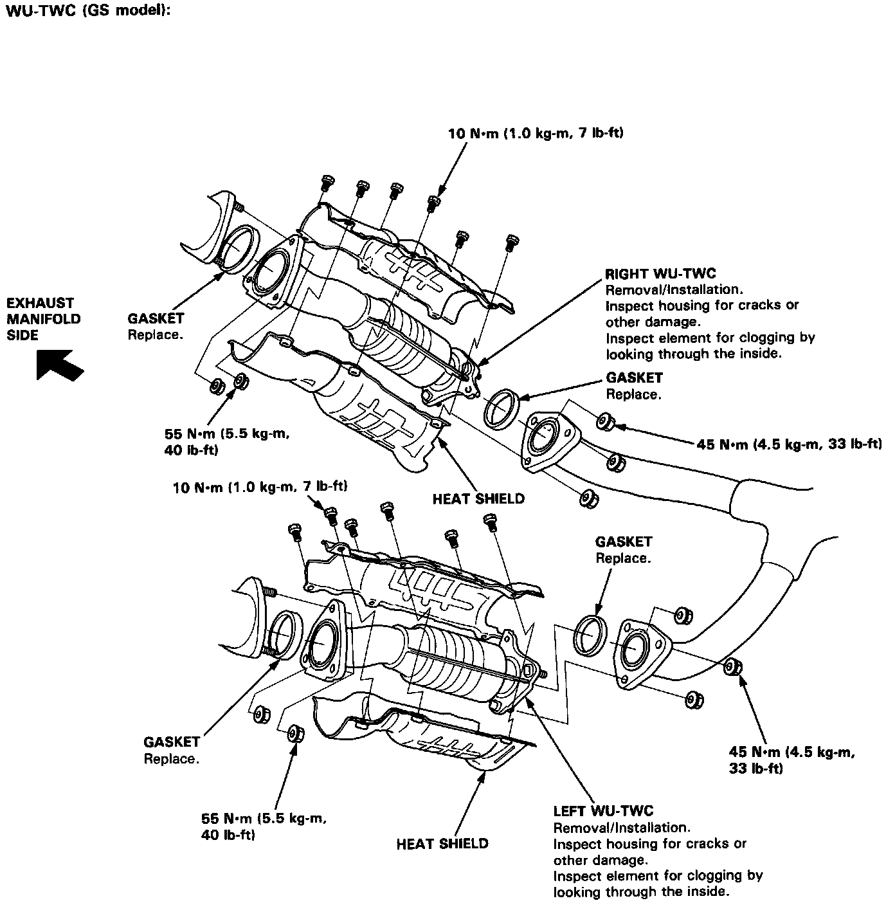

Operation CHARM
: Car repair manuals for everyone.
Home
>>
Acura
>>
1994
>>
Legend Coupe V6-3206cc 3.2L SOHC FI
>>
Repair and Diagnosis
>>
Engine, Cooling and Exhaust
>>
Exhaust System
>>
Catalytic Converter
>>
Service and Repair
>>
Warm Up Catalytic Converters (GS Only)
Warm Up Catalytic Converters (GS Only)
Warm Up Catalytic Converters.:

Replace all exhaust gaskets when reinstalling or replacing a Warm Up
Catalytic Converter
. Torque all fasteners to specifications indicated on the image.